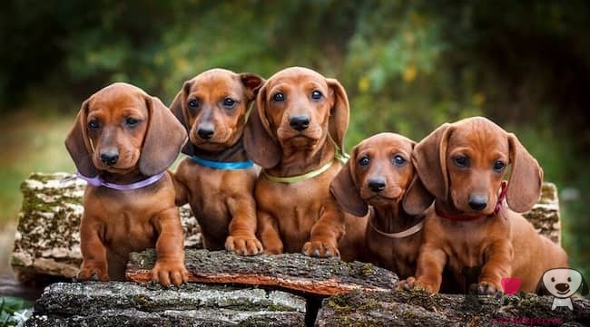

Dachshund

El dachshund, también llamado teckel, perro vienesa o perro salchicha, es una raza canina. Su peculiar fisonomía se debe a una mutación genética conocida como bassetismo, que dota a los ejemplares de unas extremidades cortas en relación con el tamaño del cuerpo.
Clasificaciones
Según su tamaño y peso puede clasificarse en:
- Estándar (9kg-15kg)
- Miniatura (5kg-9kg)
- Kaninchen (3kg-5kg)
Este último no solo se caracteriza por un menor peso y tamaño, sino que presenta unos rasgos físicos distintos.
Además el dachshund se diferencia en función de la tipología del pelo
- Pelo duro (generalmente de color gris)
- Pelo corto
- Pelo largo
Estos dos últimos pueden ser de color negro con rojo fuego, marrón chocolate y dorado.
| Tamaño y peso | Pelo |
|---|---|
| Estándar (9kg-15kg) | Pelo duro (generalmente de color gris) |
| Miniatura (5kg-9kg) | Pelo corto |
| Kaninchen (3kg-5kg) | Pelo largo |
Galería